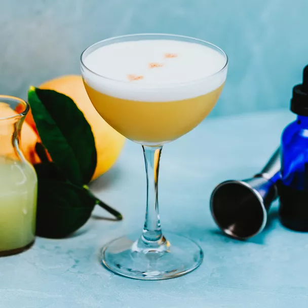

One of the worlds oldest cocktails first dated to 1862.
Ingredients
- 2 ounces bourbon
- 3/4 ounce lemon juice
- 1/2 ounce simple syrup
- 1/2 ounce egg white
- Angostura bitters
Steps
- Add bourbon, lemon juice, simple syrup, and egg white to a shaker and dry-shake for 30 seconds without ice
- Add ice and shake again until well-chilled
- Strain into a rocks glass or coupe
- Garnish with 3 or 4 drops of Angostura bitters